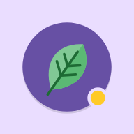
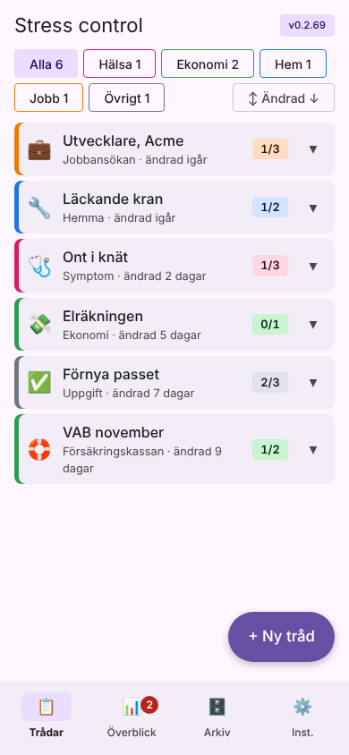
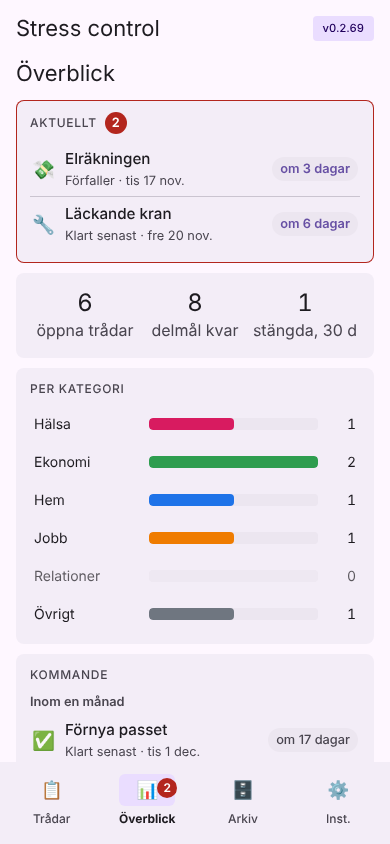

v0.2.69Stress control
Skriv ner det – och släpp det.
Varför den här appen?
Saker som snurrar i huvudet tar energi. När ett symptom, en jobbansökan eller ett husköp finns nedskrivet med nästa steg kan du släppa tanken – appen håller reda på den åt dig.
Så ser det ut



Trådar · Överblick · Arkiv – påhittad exempeldata
En tråd per sak som snurrar
Typer med rätt fält
Symptom, Jobbansökan, Ekonomi, Försäkringskassan och fler – var och en med fält i logisk ordning. Gör egna typer med text, datum, tal, bock och val i lista.
Delmål och logg
Bocka av nästa steg med datum. Skriv korta anteckningar – Ringde, fick tid 18/11 – så minns du var du är.
Återkommer varje år
Bilskatt, service, deklaration: arkivera tråden så skapas nästa, med alla datum flyttade framåt.
Arkiv och papperskorg
Lösta trådar sparas komprimerat – runt 10 000 ryms i telefonen. Borttaget går att ångra.
Se vad som brinner – på en skärm
Aktuellt
Försenat, idag och imorgon överst. Sedan det som närmar sig inom din påminnelsetid – med en röd siffra på fliken.
Deadlines
Fält som Klart senast och Förfaller syns även när datumet passerat, tills du gjort något åt dem.
Siffror som går att trycka på
Öppna trådar, delmål kvar och stängda senaste månaden. Per kategori i färg, och vad som kommer de närmaste veckorna.
Vem gör vad i familjen
Vem utför
Välj person per tråd och filtrera listan: allt som är ditt, din sambos – eller det ingen tagit än.
Egna egenskaper
Relation, född, telefon, skola – eller egna som Allergier och Skostorlek. Samma egenskaper för alla, i den ordning du vill.
Arbetstid per person
40 timmar för den ena, 30 för den som jobbar 75 %. Används när appen räknar timmar borta.
VAB utan att tappa en dag
Välj ersättning i en lista – VAB, föräldrapenning, sjukpenning och fler, eller egna. Lägg in dagarna direkt när de händer.
Inget lämnar telefonen
| Vanliga appar | Mina appar | |
|---|---|---|
| Din data | På företagets server – kan läcka eller säljas | Bara i telefonen |
| Konto | Krävs, med e-post och lösenord | Inget |
| Backup | I företagets moln | Låst fil med ett starkt lösenord som skapas åt dig – samma hårda kryptering som är praxis hos banker |
| Reklam och spårning | Ofta | Aldrig |
Så fort data lämnar appen via backup är den skyddad med den här krypteringen. Lösenordet hittar du under Inställningar – spara det i din lösenordshanterare. Det finns aldrig i filen, och utan det öppnas den inte.
Spara som app på hemskärmen
Ingen app-butik behövs. En genväg på hemskärmen startar appen i eget fönster utan adressfält – den ser ut och fungerar som en vanlig app, även utan nät.
Android
Öppna i Chrome, Brave eller Samsung Internet. Tryck på ⋮ och välj Installera app eller Lägg till på startskärmen.
iPhone och iPad
Öppna i Safari. Tryck på Dela (fyrkanten med pil uppåt), välj Lägg till på hemskärmen och sedan Lägg till.
Adress: flyinggooner.github.io/Stress-control
Öppnade du länken i Messenger eller en annan app? Välj först Öppna i webbläsare – annars går det inte att installera.
Enkelt för användaren.
Genomtänkt bakom kulisserna.
Trådar, delmål, personer och VAB-dagar – allt i telefonen, inget hos någon annan. Skriv ner det – och släpp det.